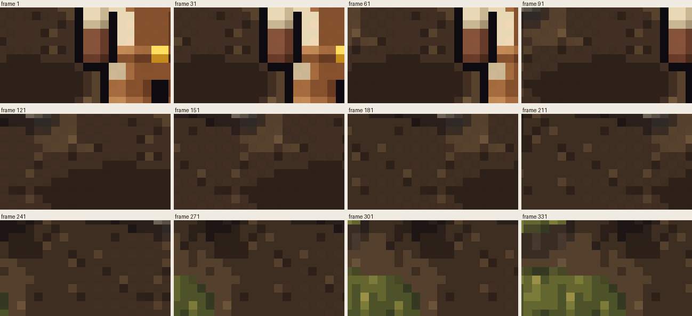
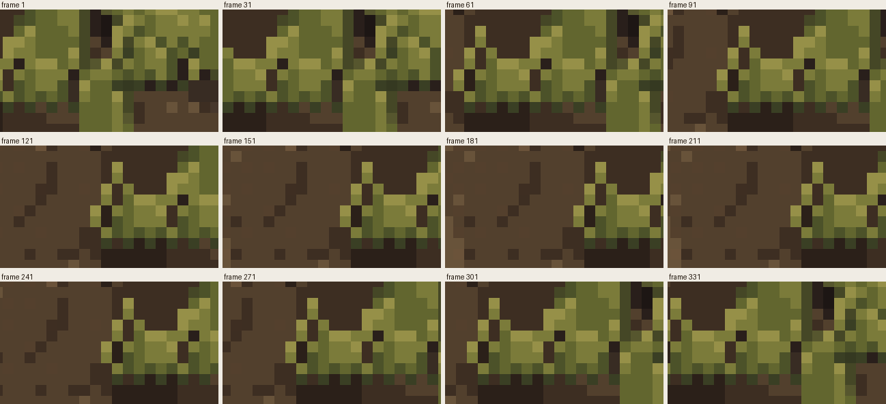
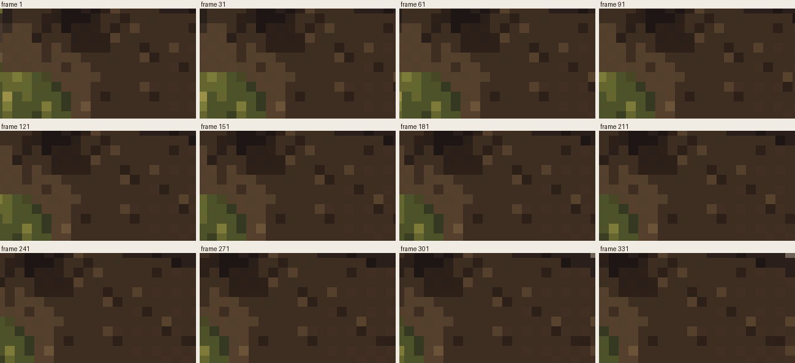

Recorded frame by frame in Chromium at 1440×900, 2× display, 120 Hz. Both sides use the new per-frame drawing and are sharp in every frame. Only the speed differs.
While it travels
Current: 3.8 px/s, a 1-pixel step every 16 frames30 px/s: a 1-pixel step every 2 frames
Turning round at the end of the drift (right side)
Current30 px/s, turning round over 1.2 s
Pixel edges, 4× crop, every 30th frame
30 px/s, travelling

30 px/s, turning

Current speed
